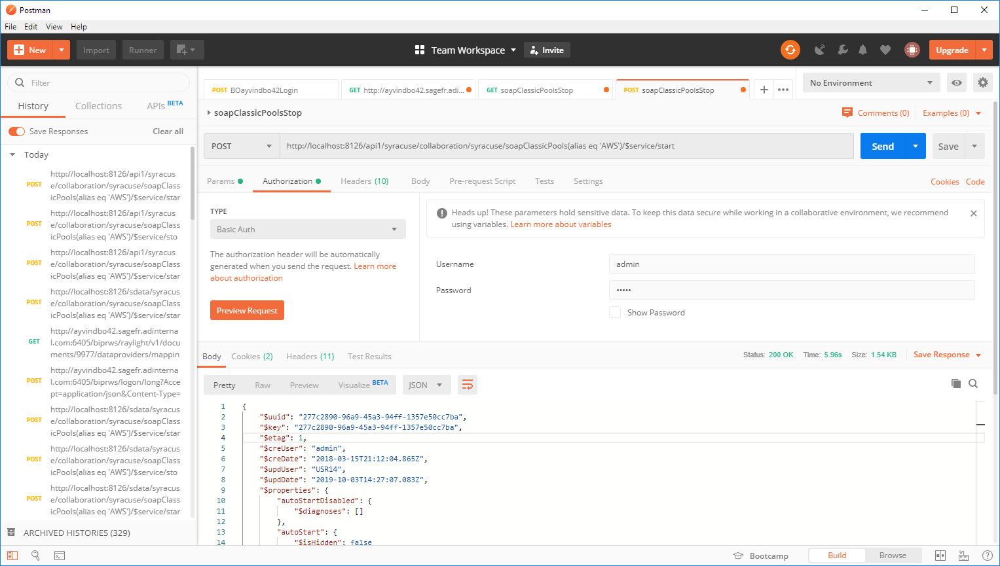

Classic SOAP pools configuration
| Administration Page | Application/Contract | Syracuse/Collaboration | Class | soapClassicPools | Representation | soapClassicPool |
|---|
A classic SOAP pool configuration is a pool of connections that allows a SOAP client to connect to SOAP Web services via dedicated classic type sessions using the same format as in version 6.
More information about SOAP web services is available in the following document.

Required information for a classic SOAP pool is as follows:
Alias
The name of the pool that is used in each web service call context.
Auto start
Sets the pool startup to automatic. The pool starts at the time the Syracuse server starts and restarts after a pool failure.
Stopped manually
Sets the pool shutdown to manual. The pool can only be stopped manually.
Endpoint
Sets the endpoint used for every web service requests.
X3 runtime tags
List of tags, separated by a comma, a Classic SOAP pool carries. Tags are especially used to define on which runtime the Classic SOAP pool can connect. For this, the same tag should be defined in the Sage X3 Warehousing solution's runtime.
Locale
Sets the language used for channel initialization; this can be changed by the web service call context.
User
Sets the user considered for channel initialization; this can be changed by the web service call context.
Maximum size
Represents the maximum number of clients (per node.js process) that can be started on this pool. A new client is started only if all clients are busy.
For example, if you set maximum size to 10, and the Syracuse load balancer host is set to 3 web services processes, 30 clients can be used if necessary.
Initialization size
Represents the number of clients (per node.js process) that are initialized during the pool startup.
For example, if you set the initialization size to 5, and Syracuse load balancer host is set to 3 web services processes, then 15 clients are initialized during the pool startup.
If you set the initialization size to more than 8, you might get a timeout error during the start or stop of the web service pool. In this case, increase the return request timeout value.
Unused timeout (mn)
Limits the channel's time availability. By default, it is set to 20 minutes like the lifetime delay of reusable classic sessions.
This setting helps recreate web services channels.
* If a channel is no longer used at the end of this availability time, it is stopped automatically.
* If the channel count is under the inititialization size, a new channel is created automatically.
If you have defined a maximum of 8 channels and an initialization size of 2 channels:
* If an overload occurs, the 8 channels are used.
* If the load gets smaller, the number of channels is automatically reduced to the initialization size of 2 channels.
Life timeout (mn)
Limits the channel's lifetime. By default, it is set to 720 minutes (12 hours).
This setting helps recreate web service channels. After this time, the channel is automatically stopped.
As for the unused timeout, if the channel count is under the initialization size, a new channel is automatically created. This allows you to renew a session even for a pool used very frequently and with a small availability time.
Status
Provides information on current state of the pool.
The grid displays one line per node.js process which retrieves a summary of information:
* Host, process, PID
* Status of the pool
* Ws Queues: number of web services that are in the queue
* Ws Count: number of web services already executed
The associated sub grid gives additional client information:
- X3 Session: The XE session created
- X3Pid: The adonix.exe process ID
- X3User: The X3 user set on the client
- X3Lang: The language set on the client
- Last access: The date and time of the last usage
- Creation date: The date and time of initialization
Operations available from the right panel
Edit
Allows you to edit the details of the pool.
Start/Update
Allows you to start or to update the pool. If channels already exist, and size or context information have changed, each channel is updated.
For example:
* If the initialization size changes from 10 to 5, calling update service destroys 5 clients.
* If the initialization size changes from 5 to 10, calling update service creates 5 more clients.
* If the endpoint changes, calling update service destroys and recreates all clients, connecting them to the appropriate X3 server.
* If the locale changes, each client is updated with the new language.
* If the user changes, each client is updated with the new user.
* Note: You can have any combination of these examples.
Important: Make sure that the host entity is correctly set up with dedicated web sessions, otherwise the start operation fails with a message that the host setup is not correct.
Stop
Allows you to stop the pool.
List of SOAP pools
Click this link to return to the list of all the pools.
Start all
Click this link to start all the defined pools. It is only available from the List of SOAP pools view.
Stop all
Click this link to stop all the started pools. It is only available from the List of SOAP pools view.
Help
Displays the technical documentation for the web services function.
Excel report
Allows you to export your pool's data to an Excel file.
Soap pools state
Provides information on the current state for all the pools.
By default a filter selects the current alias pool.
The grid displays one line per node.js process which retrieves a summary of information:
* Host, process, PID
* Status of the pool
* Ws Queues: number of web services that are in the queue
* Ws Count: number of web services already executed
The associated sub grid gives additional client information:
- X3 Session: The XE session created
- X3Pid: The adonix.exe process ID
- X3User: The X3 user set on the client
- X3Lang: The language set on the client
- Last access: The date and time of the last usage
- Creation date: The date and time of initialization
Manage Web services pools with REST API
You can use the REST web service to start and stop pools. This can be useful in cases where you can't use the user interface.
Start or update the pool
You need to use a POST HTTP request with an attached Authorization information.
POST http://[SyracuseHost]:[PORT]/api1/syracuse/collaboration/syracuse/soapClassicPools(alias eq '[POOL NAME]')/$service/start Authorization: [Basic / BearedToken ]
The /API address doesn't consume any badges, nor does the /SDATA address.
Start or update the AWS pool example
POST http://localhost:8124/api1/syracuse/collaboration/syracuse/soapClassicPools(alias eq 'AWS')/$service/start Authorization: Basic YWRtaW46YWRtaW4=
Note: You need to enter the Authorization header to add the username and password.

Start all pools
Start all example
POST http://localhost:8124/api1/syracuse/collaboration/syracuse/soapClassicPools/$service/startAll Authorization: Basic YWRtaW46YWRtaW4=
Payload
You can send one or more aliases in the payload body to limit the start to the pools identified by these aliases. If no alias is specified, all the defined pools will be started.
{
"aliases":["ALIASPOOL1","ALIASPOOL2"]
}
Response
The list of aliases corresponding to the started pools is returned along with the list of diagnoses. These are the same diagnoses displayed when you start the request from the Sage X3 Warehousing user interface.
{
"$diagnoses": [
{
"$severity": "info",
"$message": "SOAP pool ALIASPOOL1 starting."
},
{
"$severity": "info",
"$message": "[X3Pid=998] channel ready"
},
{
"$severity": "info",
"$message": "[X3Pid=1006] channel ready"
},
{
"$severity": "success",
"$message": "[Host:Port Pid] pool started"
},
{
"$severity": "success",
"$message": "SOAP pool ALIASPOOL1 started."
}
],
"aliases": [
"ALIASPOOL1"
]
}
Stop the pool
Stop the AWS pool example
POST http://localhost:8124/api1/syracuse/collaboration/syracuse/soapClassicPools(alias eq 'AWS')/$service/stop Authorization: Basic YWRtaW46YWRtaW4=
Stop all the started pools
Stop all example
POST http://localhost:8124/api1/syracuse/collaboration/syracuse/soapClassicPools/$service/stopAll Authorization: Basic YWRtaW46YWRtaW4=
Get the Web services pools list
GET http://localhost:8124/api1/syracuse/collaboration/syracuse/soapClassicPools?representation=soapClassicPool.$query
Example
"$resources": [
{
"$url": "/sdata/syracuse/collaboration/syracuse/soapClassicPools('6124f8ce-b972-4d57-8ab2-f84b95a260f3')?representation=soapClassicPool.$details",
"$shortUrl": "/sdata/syracuse/collaboration/syracuse/soapClassicPools('6124f8ce-b972-4d57-8ab2-f84b95a260f3')",
"x3serverTags": "",
"autoStartDisabled": false,
"autoStart": true,
"initSize": 2,
"maxSize": 2,
"alias": "AWS",
}]